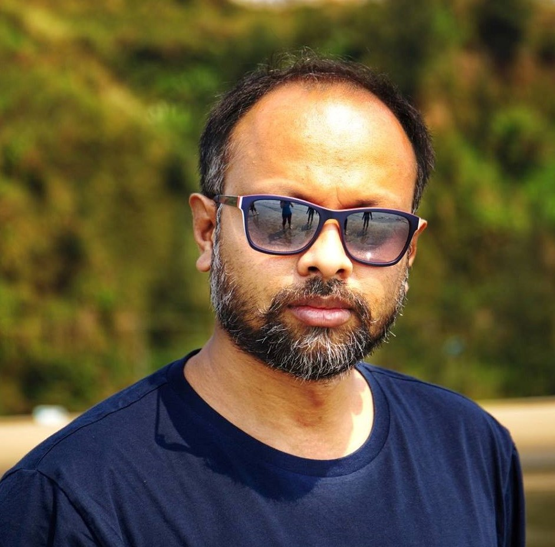

Tasvir A. Faheem
Chief Executive Officer (CEO)
Our company has been constantly developing to its goal.
However, only now we can feel the results of this fruitful
growth. The goals that we stated at the beginning of the
project are achieved. Of course, these results were not just
an accidental success but became a sequence of our mutual
work.